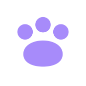
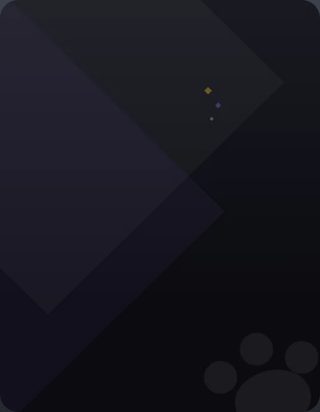

Screen, apps and wallpaper are untouched (the 540×694 .pl-surface and everything on it). What changes is the object around it: bezel, rim, notch, home, side buttons, shadow — and the 58×74 HUD corner chip that summons it. Every device below is drawn 1:1 at its real footprint with the shipped HOME grid (12 tiles + dock + the living ring on BEASTS) and the RADIO app open, so the frame is judged against the real screen. The lighter wedge in every screen corner is deliberate evidence: it is the shipped wallpaper-538.webp with its r30 corners baked against the OLD graphite tone, now inside a darker frame — the wallpaper re-bake (+ rename) is a hard cost of every shell, not a nice-to-have.
RECOMMENDATION — B · FIELD DEVICE. The phone is the one object in the UI that is a thing, and B is the only shell that reads as one while obeying the house: two-tone bands separated by contrast (the vector rule — no rim needed; A needs a hairline to exist against the dark backdrop, and a hairline around the whole device is exactly the "AI dashboard" edge the rule bans), chamfered corners that border-shape polygon() draws natively (sharp corners, 8 vertices = a bevel, drop-shadow follows the shape — probe-verified 2026-09-01), a real 44px home button that keeps the tap target today's chin gives (A shrinks HOME to a 22px strip and the paw to ~10px), and a 3px accent seam under the top band that makes the frame obey the page-identity law the screen already obeys (violet at home, the app's accent inside an app). It is also 58px shorter than today (782 vs 840) and never touches the screen the user reads and types on. C is honest to the beasts but the beasts are the content — a pixel frame competes with them, mixes 4px grain with the 1px house type on the same object, and blurs at any non-integer UI scale; it is an art task with a real maintenance tail. A is the safest and the least of a thing. Cut first in B if it reads as fake chrome (the user cut the fake signal bars 2026-08-30): the lanyard lug, then the side nubs — unless the build wires the nubs to the radio volume (A/D already exist), which would make them honest.
Bezel per side 18 sides (16 pad + 2 rim) · 60 top (58 strip + rim: speaker 64×6 #0e0f13 with 1px #565a66 rim · camera 10×10 2px gold ring, lens 4×4) · 86 bottom (84 chin + rim = the HOME hit, paw deboss 56×57 hi/lo PNG pair)
Screen .pl-surface 538×692 + 1px #2b2d36 = 540×694 · r30 · padding 22 13 8 13 → 512 content · wallpaper-538.webp with r30 corners baked against the graphite tone
Side buttons right edge at left:572, 5 wide — nub-a 52 tall #5a5e6a @170 · nub-b 34 tall GOLD @238 · .pl-shade r54 alpha 0 (dead since v9 FLAT)
HUD chip 58×74 @ right 16 / bottom 16, z 9100 (under the backdrop 9600 — while the phone is open the chip is seen THROUGH the .55 dim): 54×70 body + 2px #8B5CF6 rim r16, fill #2A2044→#17102A, violet halo 0 0 22px, notch 16×3, screen inset r10 #0D0916 + 24px violet paw, M keycap 12×15, badge 28×20 #F87171
What reads wrong today — the gold rim + gold camera ring + gold nub are three permanent "go" marks on an idle object (gold = cursor/primary everywhere else); the graphite gradient is the only gradient slab left in the house; the halo on the chip is the one colored glow the no-glow rule still tolerates; the speaker/camera are fake chrome of the same family as the signal bars the user cut.
A · GLASS SLAB — 564 × 738
frame #0f0c17 · 2px rim rgba(214,206,236,.14) · r28 outer / r20 screen · bezel 10 side / 18 top / 22 bottom (+2 rim) · notch pill 72×6 #05040a · paw = 1px-inset deboss 16px · shadow 0 12 32 rgba(0,0,0,.55) · screen hairline #2b2d36 CUT (the frame is darker than the wallpaper — contrast does the edge)
HOME · 1:1
1
2
3
4
RADIO · 1:1
Anatomy — A
1Rim 2px rgba(214,206,236,.14) — TextDim, not gold. Present because #0f0c17 on the .55 backdrop has no edge without it; this is the one hairline the shell needs, and the reason A is the least house-native of the three.
2Notch pill 72×6 r3 #05040a centred in the 18px top bezel (y 5). The camera lens + gold ring are cut (fake chrome).
3Paw deboss 16px box → ~10px visible paw, hi copy 1px below lo — a brand mark, not a button. HOME hit = the whole 540×22 bottom strip (Q stays the key twin). This is A's real cost: today's 84px chin was a comfortable tap.
4Sides 10 + 2 rim = 12 per side (today 18) → footprint 564: .pl-wrap 564, margin-right 78 keeps the same right anchor (72 + 6). No side buttons — a slab has none.
Frame: #0f0c17 flat (no gradient) · r28 outer, r20 screen (concentric −8) · shadow 0 12 32 rgba(0,0,0,.55) (today's −40 30 80 was the lean's cast). Height 18+694+22+4 = 738 (−102 vs today).
Cost: wallpaper re-bake at r20 with #0f0c17 corners + rename · .pl-surface/.pl-app-tint/.pl-bloom-clip/.pl-wall r30→r20 · chin 84→22 (hit-home rect shrinks) · nubs + bezel-top markup deleted.
closed

3M
open · dimmed
M
HUD chip — A
54×70 + 2px rim r16 → rim rgba(214,206,236,.28) (the shell's .14 is invisible over the 3D world; .28 is the floor), frame #0f0c17, screen inset #0D0916 r9 at 4/8/4/8 with the 24px violet paw, 16×2 notch, 6px paw-deboss dot at the foot. Halo CUT (no-glow); elevation = 0 4 10 rgba(0,0,0,.55). Open = one value swap: the inset takes the OS violet #3b2a63 (mirrors the device being out); the badge hides — alerts are on the phone now. Badge stays 26×20 #F87171 at −8/−8, top-right (the free corner; the M key owns bottom-right).
Slide-in from the right edge — A
t=0 · x+140 · op 0
90ms · x+62 · op .5
180ms · x+16 · op .9
280ms · rest
What enters first: the dim rim and the r28 corner — a pane of glass arriving. Reads soft; with the .14 rim the leading edge is nearly invisible for the first 90ms, so the slab seems to fade in place rather than slide. Keep the shipped timings (opacity .18s ease-out, translateX .28s glide) — nothing on A wants to lead.
B · FIELD DEVICE — 576 × 782 (+4 nub overhang) · RECOMMENDED
body #15121f · bands #1c1830 top 28 / bottom 60 · chamfer 16 (border-shape polygon, 8 vertices) · 3px accent seam under the top band (#9b6cff .85 at home · AppViewAccent() in an app) · home button 44 r22 #0f0c17 + 30px paw glyph · side nubs 4×28 #3a3350 @140/180 on the right edge · lanyard lug 12 r6 top-left · speaker slit 64×4 #0a0912 · no rim · drop-shadow 0 12 22 rgba(0,0,0,.6) follows the chamfer
HOME · 1:1
1
2
3
4
5
6
RADIO · 1:1 — the seam wears #c26bff
Anatomy — B
1Top band 576×28 #1c1830 (the raised-card token) on the #15121f body (the slab token) — two-tone by contrast, no stroke. Speaker slit 64×4 #0a0912 r2 centred at y 12 — the one "device" mark kept up top; no camera.
2Accent seam 576×3 at y 28 — #9b6cff at .85 on the home grid, AppViewAccent() inside an app (#c26bff on RADIO, right). One inline background-color that already exists for the tint; the frame recolours with the screen. The seam is the frame's only accent.
3Lanyard lug 12 r6 #2a2340 with a 4px #0a0912 hole at (20, 8) — an in-world detail. First cut if it reads as fake chrome.
4Side buttons two 4×28 nubs #3a3350 at y 140 / 180 on the right edge (left:576, protruding 4 → .pl-wrap 580, margin-right 68). Right edge = the edge that enters first on slide-in. Optional: wire them to radio volume (hit-vol-up/down) — the A/D keys already exist; otherwise they are silhouette only.
5Home button 44 r22 #0f0c17 recessed into the 60px bottom band (8px air above and below), 30px paw glyph in the deboss-hi tone #626672; press = glyph opacity .6 (today's rule, no transform). HOME hit = the 44 disc PLUS the band around it (540×60) — the tap stays generous.
6Chamfer 16 — border-shape: polygon(2.8% 0, 97.2% 0, 100% 2%, 100% 98%, 97.2% 100%, 2.8% 100%, 0 98%, 0 2%) on the 576×782 shell (16/576 = 2.78%, 16/782 = 2.05%). Verified: polygons are sharp, 8 vertices = a bevel, filter: drop-shadow follows the shape. Bands are CHILD strips (a polygon's own border is one uniform stroke — never per-side).
Screen at (18, 31) — sides 18 as today, r22 (card token; wallpaper corners re-baked against #15121f). Height 28+694+60 = 782 (−58 vs today). Brief said bottom band 44: a 44 button in a 44 band has zero air — 60 is the floor for 8/8.
Cost: wallpaper re-bake r22 vs #15121f + rename · tint/clip/wall r30→r22 · .pl-bezel-top → band + seam + slit + lug markup · .pl-chin → band + .pl-home disc (hit-home rect = the band) · nubs re-positioned (two, 4×28, neutral) · .pl-shell loses border/gradient/r54, gains border-shape + drop-shadow (box-shadow does not follow a border-shape; drop-shadow does).
closed
3M
open · dimmed
M
HUD chip — B
Same 58×74 anchor; body 54×70 as the shell in miniature: #15121f, chamfer 5 (border-shape, 8 vertices), bands 7 top / 13 bottom #1c1830, 1px seam #9b6cff at y 7, screen inset 44×41 r5 #0D0916 with the 24px violet paw, 10px home dot #0f0c17 on the bottom band, two 2×6 nubs on the right edge. Halo CUT; drop-shadow 0 4 10 rgba(0,0,0,.55). Open = the seam takes the live accent + the inset takes the OS violet — the chip is literally the pocket the device came out of; badge hides. Badge 26×20 #F87171 at −8/−8 rides the top band's free right end (the lug is top-left on the shell; the chip carries no lug — too small to read).
Slide-in from the right edge — B
t=0 · x+140 · op 0
90ms · x+62 · op .5
180ms · x+16 · op .9
280ms · rest
What enters first: the two side nubs and the chamfered corners, then the bands and the accent seam — an object being handed to you, with the seam telling you which colour the screen will be before the screen is readable. Same shipped timings; the seam is the one element worth a beat of its own later (it could land .06s after the body — a transition-delay on a class toggle, not a keyframe).
C · PIXEL FRAME — 572 × 772 · art task
4px cells (2× the sprites' grain, 143 × 193 cells) · frame #0f0c17 · outline cell #05040a · bevel cell #3a3350 top-left / #07060c bottom-right · staircase corners (3,1,1) · side 4 cells / top 6 / bottom 13 · pixel paw home key 13×9 cells · screen opening 540 × 696 (694 does not divide by 4 — 2px reveal at the foot) · drawn here by canvas from the same numbers as the export spec
HOME · 1:1
1
2
3
4
RADIO · 1:1
Anatomy — C
1Corners staircase: row 0 loses 3 cells, rows 1–2 lose 1 — the chunky rounded corner of a 16-bit handheld. Cell 0 ring = #05040a outline; cell 1 ring = the bevel (#3a3350 on the top/left runs, #07060c on the bottom/right runs).
2Bezel 4 cells (16px) sides — 2px thinner than today; top 6 cells (24) with a 16×1-cell speaker slit; bottom 13 cells (52) for the key.
3Pixel paw key 13×9-cell recessed key (#0a0912, 1-cell dark lip at the bottom) with a 9×7-cell paw in #626672 — the beast-sprite grain. HOME hit = the key + the bottom bezel.
4Screen opening 135 × 174 cells = 540 × 696: the 694 screen sits at (16, 24) with a 2px frame-tone reveal at the foot (or .pl-surface grows 692→694 declared; the grid tolerates +2). Corners of the screen are SQUARE (the frame's inner edge is a pixel edge) — the wallpaper re-bakes with square corners, no radius.
Mixed grain is the design's honest flaw: the 1px status type, the r22 vector tiles and the anti-aliased seam sit inside a 4px-cell frame on the same object. The beasts are pixel art but they are the content; the house chrome around them is vector everywhere else.
Cost: an ART TASK (below) + the same wallpaper re-bake (square corners) + a 56×72 chip asset; the frame image is an <img> first child (an alpha PNG as a div background paints its transparent pixels BLACK in-engine). Any future change to the screen size = a re-export.
closed
3M
open · dimmed
M
HUD chip — C
56×72 = 14×18 cells at the SAME 4px grain (58×74 is not divisible by 4; the anchor stays right 16 / bottom 16, the button box 58×74, the art centred). 1-cell outline, 1-cell bevel, 10×10-cell screen inset with the 24px paw (vector — 24 = 6 cells, so it sits on the grid). Badge #F87171 stays vector at −8/−8: a pixel numeral would need a pixel font; the anti-aliased badge over the pixel chip is the mixed-grain caveat in miniature. Open = the inset fills OS violet (an <img> src swap to an "open" bake — a second 56×72 asset), badge hides.
Export spec — C (the art task)
· Shellui/pawpad/shell-pixel.webp — 572 × 772, fixed (not 9-slice: the screen is a fixed 540×694/696 and a 9-slice would stretch the paw key and the corner staircase), LOSSLESS WebP with alpha (lossy WebP drops alpha in-engine; PNG decode dulls semi-transparent pixels — pixel art has none, so PNG is acceptable, WebP preferred). Authored at 143 × 193 native pixels and exported at 4× nearest-neighbour — never resampled.
· Placement in-flow <img class="pl-shell-art"> 572×772 as the FIRST child of .pl-device (paint order = DOM order; the screen and chrome reflow on top via the .pl-wall negative-margin trick), image-rendering: pixelated, background-repeat: no-repeat, NO transform / filter / object-fit on the img (compositor blur law). The shadow is a sibling div under it, not a filter.
· Integer scale only: the UI root scales 1920×1080 to the viewport, so at 1440p the 4px cells render at 5.33px — the same unevenness the beast sprites already show. Accepted for sprites (content); on a 572px chrome object it is a visible defect. This is the technical reason C loses even if the look wins.
· Cache: re-exports must RENAME (the running game serves cached texture pixels for overwritten assets).
· Palette: #05040a outline · #0f0c17 body · #3a3350 bevel-light · #07060c bevel-dark · #0a0912 recess · #626672 paw. The card's canvas is the reference drawing — the artist should redraw it, not upscale it.
Slide-in from the right edge — C
t=0 · x+140 · op 0
90ms · x+62 · op .5
180ms · x+16 · op .9
280ms · rest
What enters first: the light bevel cell and the staircase corner — a sprite sliding on. Sub-pixel translateX on a pixel-art texture SHIMMERS during the .28s glide (the same reason sprites never tween by fractional px); C would need the slide snapped to 4px steps or replaced by an opacity-only entrance — a third cost.

21:47TAMER JD
21:47TAMER JD
RADIO
CHILL FM ›
CHILL FMMoss Lantern WaltzSwitches to Battle FM when a fight starts